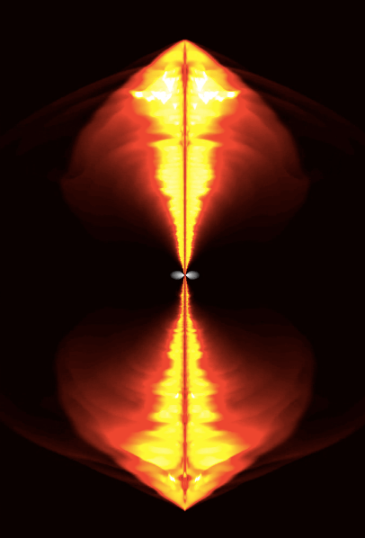
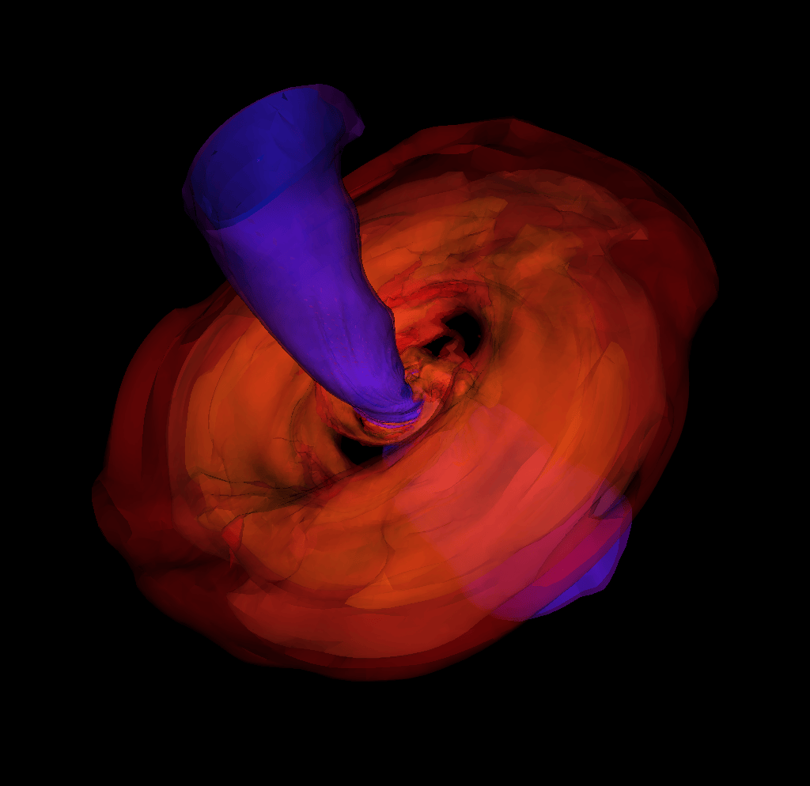
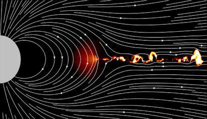
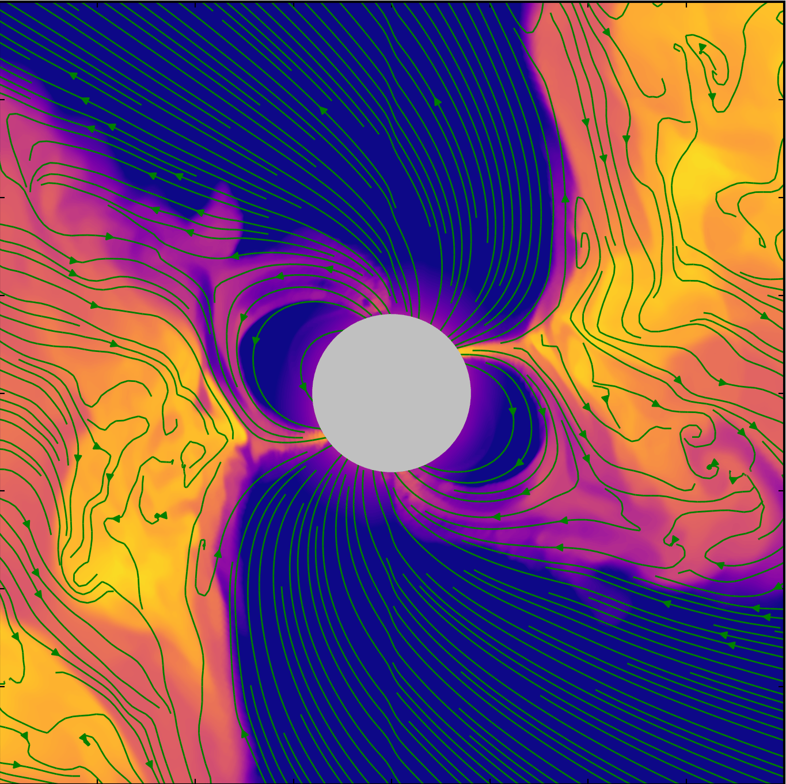

Misaligned accretion GRMHD
A tilted accretion flow around a rapidly spinning black hole.
How do gravity, magnetic fields, and plasma interact around black holes and neutron stars? Relativistic models provide a framework for exploring accretion, jets, and magnetic eruptions in these extreme environments.
Physical models become experiments through GPU-accelerated GRMHD simulations. H-AMR, which I co-developed, uses adaptive mesh refinement to follow complex flows; further numerical methods extend these simulations to magnetized neutron-star environments.
Simulations connect with the sky through radiative transfer and analysis. Synthetic images, spectra, and light curves reveal how the underlying physics might appear to telescopes.
A tilted accretion flow around a rapidly spinning black hole.
Flaring activity in the environment of a black hole.
Jets emerging from an accretion disk.
Ray-traced simulation of a tilted accretion disk.

Simulation stillA simulation follows a jet from near the horizon toward galactic scales.

Simulation stillChaotic accretion can warp and bend disks and jets.

Simulation stillA three-dimensional simulation shows structure in pulsar current sheets.

Simulation stillA neutron-star magnetic field interacts with accreting gas.